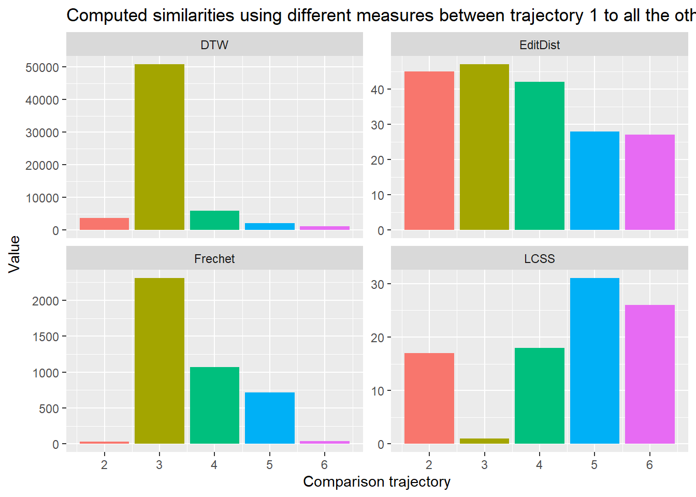

Exercise 3 - Computational Movement Analysis: Patterns and Trends in Environmental Data
1. Information & Metadata
1.1 Information
Study program: MSc in Environment and Natural Resources FS23
Module: Computational Movement Analysis: Patterns and Trends in Environmental Data
Course: R Exercise 3 - Week 3
Lecturers: Patrick Laube (laup), Nils Ratnaweera (rata) & Dominic Lüönd (luoe)
Authors: Lukas Bieri (bieriluk)
1.1 Structure R-Project
The following project was created for the exercise: cma-week3-rexercise
Data was stored in the folder “datasets”.
Code and explanations in this Quarto-File where stored and submitted via the public GitHub Repo “bieriluk/cma-week3”: https://github.com/bieriluk/cma-week3.git
1.2 Data
Data for the exercise was provided by the teaching staff via the plattform “Moodle”.
The data originates from the ZHAW Research Projekt “Using an acoustic signal to prevent wild boars from damaging crops” https://www.zhaw.ch/en/about-us/news/news-releases/news-detail/event-news/using-an-acoustic-signal-to-prevent-wild-boars-from-damaging-crops/
In addition, tracking data of my own movement was used. This data was collected using the tracking app Posmo: https://posmo.coop/produkte/posmo-project-tracking-fuer-gruppen
The tracking data was downloaded on the 02.05.2023 and covers the duration from 11.04.-07.05.2023. 2. File: “posmo_2023-01-01_2023-05-07.csv”
Information on the R Exercise can be found here: https://computationalmovementanalysis.github.io/FS23/
These R Exercises are created by Patrick Laube, Nils Ratnaweera, Nikolaos Bakogiannis and Dominic Lüönd for the Course Computational Movement Analysis and are licensed under Creative Commons Attribution 4.0 International License.
1.4 Used Software
R version 4.2.1 (2022-06-23 ucrt) – “Funny-Looking Kid” Copyright (C) 2022 The R Foundation for Statistical Computing Platform: x86_64-w64-mingw32/x64 (64-bit)
RStudio 2023.03.0+386 “Cherry Blossom” Release (3c53477afb13ab959aeb5b34df1f10c237b256c3, 2023-03-09) for Windows Mozilla/5.0 (Windows NT 10.0; Win64; x64) AppleWebKit/537.36 (KHTML, like Gecko) RStudio/2023.03.0+386 Chrome/108.0.5359.179 Electron/22.0.3 Safari/537.36
Git for Windows Version 2.40.1
2. Performe the Segmentation on the exemplary wild boar data (Demo)
2.1 Preparation
In Preparation: Restart R and clear console.
Then: Load necessary functions
library("readr") # to import tabular data (e.g. csv)library ("tidyr")library("dplyr") # to manipulate (tabular) data
Attache Paket: 'dplyr'
Die folgenden Objekte sind maskiert von 'package:stats':
filter, lag
Die folgenden Objekte sind maskiert von 'package:base':
intersect, setdiff, setequal, union
library("ggplot2") # to visualize datalibrary("sf")
Warning: Paket 'sf' wurde unter R Version 4.2.2 erstellt
Linking to GEOS 3.9.3, GDAL 3.5.2, PROJ 8.2.1; sf_use_s2() is TRUE
Rows: 51246 Columns: 6
── Column specification ────────────────────────────────────────────────────────
Delimiter: ","
chr (2): TierID, TierName
dbl (3): CollarID, E, N
dttm (1): DatetimeUTC
ℹ Use `spec()` to retrieve the full column specification for this data.
ℹ Specify the column types or set `show_col_types = FALSE` to quiet this message.
wildschwein_BE$TierName |>unique()
[1] "Sabi" "Rosa" "Ruth"
For this, we will only work with the data of “sabi”
Careful, you need rowwise() for the mutate() function to caclulate mean() for every row. You need to ungroup it in the end, because your data frame has the rowwise grouping saved.
2.6 (c) Remove “static points”: These are points where the average distance is less than a given threshold
We need to determine the appropriate threshold where the points are stationary. It helps to visualize the data:
Rows: 16439 Columns: 7
── Column specification ────────────────────────────────────────────────────────
Delimiter: ","
chr (4): user_id, weekday, place_name, transport_mode
dbl (2): lon_x, lat_y
dttm (1): datetime
ℹ Use `spec()` to retrieve the full column specification for this data.
ℹ Specify the column types or set `show_col_types = FALSE` to quiet this message.
Keep only the necessary columns
posmo <-select(posmo, datetime, lon_x, lat_y)
Store your data frame as a spatial data frame and transform the coordinate system from WGS84 (i.e. EPSG 4326) to CH1903+ LV95 (EPSG 2056)
Unfortunately the timelag between measurement points is very irregular. Maybe in a later step it would make sense to increase the granularity in the data to
For this exercise we try to use the data as is and try it with a window of 10 steps and 20 steps forward and backward in the data. This is roughly v = 20s-6min, because the most common timelag is 10s, with most being between 1 and 20s.
3.2.3 (b) Measure the distance from every point to every other point within this temporal window v
Careful, you need rowwise() for the mutate() function to caclulate mean() for every row. You need to ungroup it in the end, because your data frame has the rowwise grouping saved.
3.2.4 (c) Remove “static points”: These are points where the average distance is less than a given threshold
We need to determine the appropriate threshold where the points are stationary. It helps to visualize the data:
Moving 200m in approx. 6min (more or less the time window) being the threshold for being stationary seems to line up well with the reality when visualizing it.
3.5 Task 4: Segment-based analysis
Create function for segmentation at the stationary points:
rle_id <-function(vec) { x <-rle(vec)$lengthsas.factor(rep(seq_along(x), times = x))}
Seems to line up well with ground truth for that day and the trips I took. If I would want to improve the segmentation, I would have to compare the details with reality and maybe smoothen out the differences in timelags.
Rows: 289 Columns: 4
── Column specification ────────────────────────────────────────────────────────
Delimiter: ","
dbl (3): TrajID, E, N
dttm (1): DatetimeUTC
ℹ Use `spec()` to retrieve the full column specification for this data.
ℹ Specify the column types or set `show_col_types = FALSE` to quiet this message.
ggplot(pedestrian, aes(E,N, color = TrajID)) +geom_path() +geom_point() +coord_equal() +facet_wrap(TrajID~.)
Similarity_long <-pivot_longer(Similarity, cols =c("DTW", "EditDist", "Frechet", "LCSS"))ggplot(Similarity_long, aes(ID, value)) +geom_bar(stat='identity', aes(fill =factor(ID))) +facet_wrap(name~., scales ="free_y") +theme(legend.position ="none") +labs(x ="Comparison trajectory",y ="Value", title ="Computed similarities using different measures between trajectory 1 to all the other trajectories" )

According to this visualization, the closed fit to my intuitive answer would be DTW and Frechet-Distance, where 2 and 6 are the most similar in trajectory. However the both consider 3 to be the most dissimilar, which seems counter-intuitive. The only one that does not consider 3 to be very dissimilar is LCSS, but it considers it the most similar which cannot be true either. Maybe the specifications for the methods need to be adjusted
3.8 Submission
Submitted on the 09.05.2023 by pushing it to GitHub.